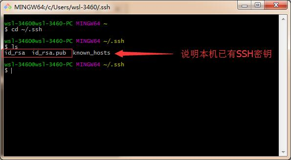
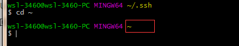
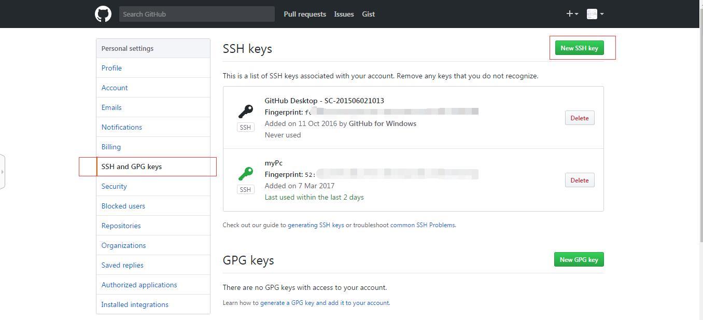
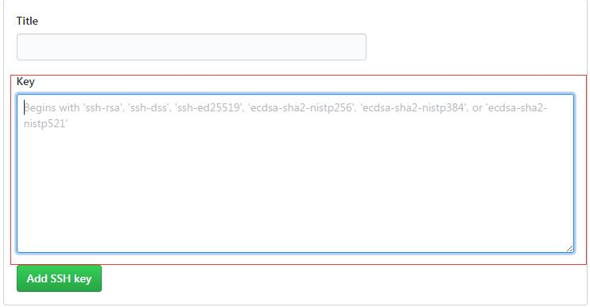

Hexo配置
Updated:
Hexo的配置（windows）
无意中看到了一篇关于在GitHub上部署自己的静态博客的文章，阅读完毕后很想尝试一下。
于是开始了长达一天半的征程.
如今成功部署，所以来分享一下这其中自己踩过的坑和解决办法。
准备
首先我们要有node环境、npm包管理、Git、Github
安装nodejs
鉴于npm是海外的，大陆访问略有艰辛，所以一开始我就切换了淘宝NPM镜像，当然大家可以选择使用VPN，这里就不做过多介绍了
使用nrm快速切换NPM源
为了保证我们的正常安装，首先这里可以设置一下npm命令的源为淘宝的镜像CNPM
具体操作如下：
安装nrm
切换淘宝源
|
|
这样就表示成功了
Git 安装
可以参考这个教程
http://www.runoob.com/git/git-install-setup.html
废话一些
安装的过程中参考了很多前人的经验。不过因为一个人出现的问题总归只有那么几个，所以我在配置的过程中也出现了一些现有教程中找了半天也没有解决方案的问题。最后在搜索引擎的帮助下，还是找到了相关的内容，最后得以解决。
配置环境
创建Repository
首先需要在GitHub上创建一个Repository
需要和自己的用户名对应
|
|
我创建的仓库名
配置 Github的 SSH Key
git安装成功后找到git bash启动图标

1.设置Git的user name和email：
|
|
email建议为注册github时的邮箱
2.检查本机是否有设置SSH Key
|
|
成功进入ssh目录后，检查目录下文件
如下图所示，如果有对应的SSH Key请跳过以下步骤【3.生成新的SSH Key】

3.生成新的SSH Key
git bash内输入命令
|
|

保证在 ~ 目录下继续输入命令
|
|
建议输入准确有效的邮箱
接下来三次回车enter即可，密码设置也可为空
成功执行以上步骤后会生成两个文件
id_rsa 和 id_rsa.pub
把id_rsa.pub文件里的内容复制到GitHub里
id_rsa.pub的地址：C:\Users\wsl-3460\.ssh
公钥文件地址根据git安装时路径决定，一般安装时没有更改就在系统用户目录下找即可
登录GitHub找到 New SSH key

将id_rsa.pub文件内容复制到图中的位置，保存即可

git bash内测试
|
|
最后看到这句话，就成功了
安装Hexo
|
|
在git bash内输入以下命令
进入D盘，创建一个名为Hexo的文件夹 ，进入Hexo文件夹内
创建一个名为blog的文件夹并进入
|
|
在当前目录内执行 初始化项目命令
|
|
hexo会在当前项目目录内构建所需内容
接下来在当前目录内运行以下命令会安装 node_modules
启动项目服务
本地启动流程：
|
|
出现以上内容说明Hexo Server已经启动了
在浏览器中打开http://localhost:4000/
ctrl+c 停止server
创建新的blog：
打开git bash 进项目目录内 【D:/Hexo/blog】
执行以下命令
|
|
创建成功后 可用Markdown编辑器工具帮助编辑blog内容
生成静态网页：
|
|
成功后会在项目下【D:\Hexo\blog\public\】生成对应的HTML，CSS文件内容
部署Blog至GitHub
部署前需配置好_config.yml
文件地址：
D:\Hexo\blog_config.yml 找到以下内容
|
|
修改为：
|
|
repository：
必须是SSH形式的url（git@github.com:liyxPro/liyxPro.github.io.git），而不能是HTTPS形式的url（https://github.com/liyxpro/liyxpro.github.io.git）
执行
最后有这句话 Deploy done: git 代表部署成功
现在可以通过访问
https://liyxpro.github.io/ 浏览部署成功的博客了
报错处理
1.执行 hexo deploy 后,出现 error deployer not found:git 的错误
首先要确认 Hexo的版本
|
|
Hexo 更新到3.0之后，deploy的type 的github需要改成git
如果查看版本之后，发现其版本不是3以上，可以通过以下的命令操作进行处理
|
|
具体内容可参考此文章内容
Hexo出现Error deployer not found:github 的错误
参考引用：
Hexo搭建Github静态博客